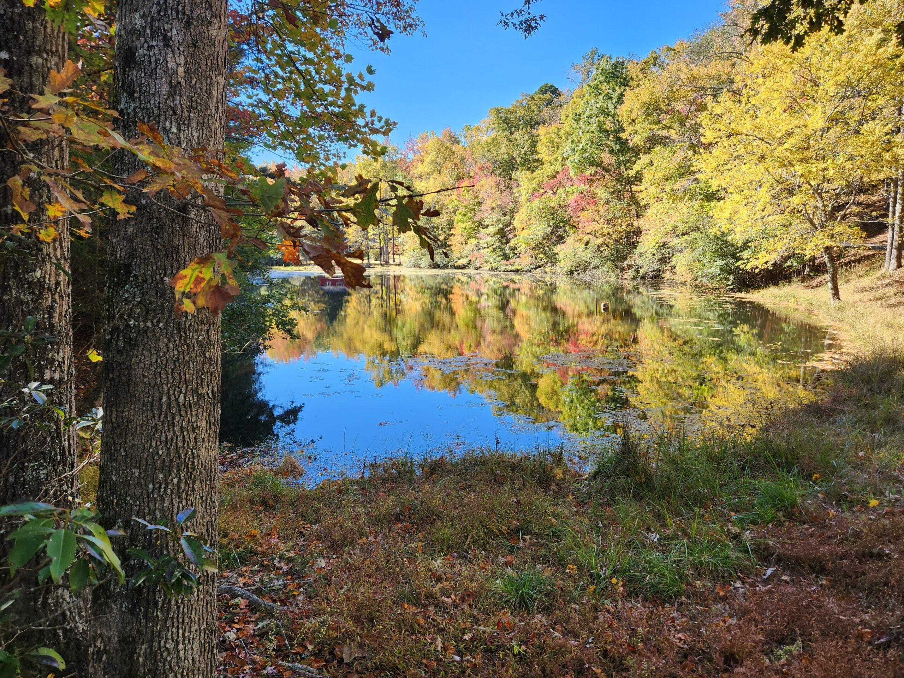
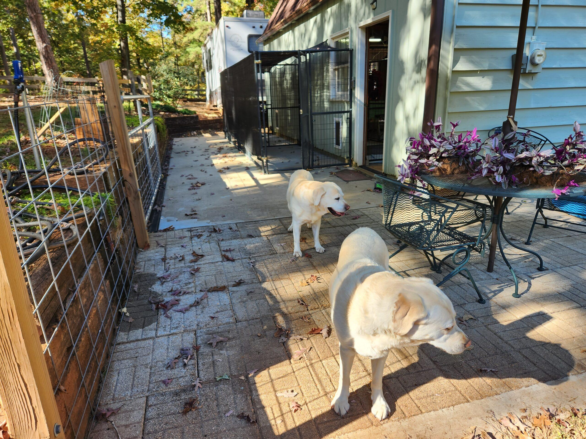

Persimmon Hill Labs sits on a lovely 17-acre farm in the Foothills of Western North Carolina, near Columbus. It's home to 5–7 Labs at any given time. We love our babies, and they live in the house and sleep with us every night. It's a devotion.
My love of Labs started as a young girl in Maryland. I was always amazed at their athleticism and their love of water. Our dogs are all English Labrador Retrievers with superb temperaments — and beautiful!
Our puppies grow up underfoot, surrounded by family life, early handling, and gentle socialization from day one.
We breed for sound structure, longevity, and that classic sweet Lab temperament — with health-tested parents.
Our relationship doesn't end at pickup day. We're here for our families and our dogs for life.
The English Labrador is known for a broader head, a sturdier build, a thick "otter" tail, and a calm, biddable disposition. Every dog here reflects those classic qualities — the athleticism and love of water that define the breed, paired with the gentle, people-loving temperament that makes a Lab such a wonderful family companion.
Whether you're looking for a devoted family companion, an agility or obedience partner, a hunting buddy, or a show prospect, our goal is to match the right puppy with the right home.
Start Your Application
We'd love to hear from you. Reach out any time — Barb reads every message.
Contact Us